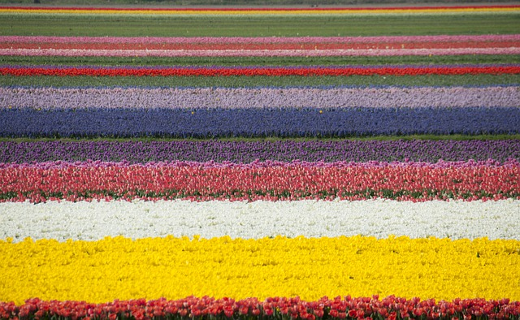
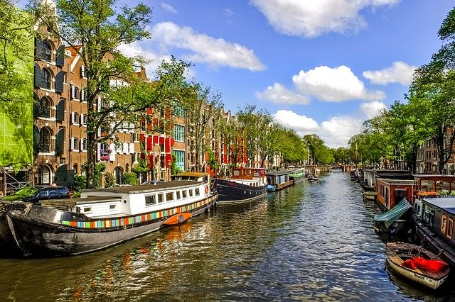

One thing that has always drawn me to the Netherlands is there tulip fields. They look beyond beautiful and I would love to see it with my own eyes.
The architucture in the Netherlands is something that captures me, I love how tight nit all the buildings are as well as how old they are, they each tell a story. I live in a suburban area where almost all houses are cookie cutters and look exactly the same.
